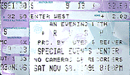

|
November 30, 1996 UTEP Special Events Center. El Paso, TX
 The El Paso Times December 1, 1996
Rush revives classic rock in El Paso By opening Saturday night's concert at the Special Events Center with music from the movie "2001: A Space Odyssey," Rush set the tone for the night to come. Rush, the Canadian trio of bassist Geddy Lee, guitarist Alex Lifeson and drummer Neil Peart, took an El Paso crowd of more than 6,000 through an odyssey of 23 years of music that covers the 20 albums the band has recorded. Rush opened the show with the little known "Dreamline," from the album "Roll The Bones" but that was what made this night special for Rush fans. The show, billed "An Evening With Rush," gave the band the opportunity to perform some of its lesser-known songs which is what the band did. "We're glad to be back in Texas," Lee said to open the show. "We've got a big show planned for you. I hope ya'll took some vitamins this morning." Rush proceeded to mix the old with new, going through a set that included "Big Money," and "Driven" and "Half the World," from their latest album "Test For Echo," before returning to old classics like "The Trees" and "Force Ten." The band was backed up by a huge video screen that mixed live shots of the band with clips from videos. "We always enjoy playing extended shows like this," Lee told the crowd. "It gives us a chance to play some foolish songs and some serious songs. This is one of our favorites." Lifeson then moved into the ballad "Nobody's Hero" from the album "Counterparts." The song details the struggles of people dying from AIDS. Rush then moved into the classic and crowd favorite "Closer to the Heart," one of the band's most popular songs. But the best came next as Rush played its own space odyssey, "2112." "2112" is Rush's fourth album and the one that put the band on the map. Again mixing video with live shots, the band played the space opera in its entirety, getting the crowd on its feet with the "Overture" before breaking into the powerful "Temples of Syrinx." Lifeson went center stage with "Discovery" and brought the house down with "Presentation." Rush ended the opera, about a distant planet where preachers rule. But a boy discovers music which brings the rule to an end with an alien race descending on the planet with the "Soliloquy" and the "Grand Finale." The band then took a 20-minute break before closing out the show with such classics as "Limelight," "Tom Sawyer" and the ballad "Time Stand Still." Rush provided all that it promised and more, proving once again that classic rock will always be around.
|